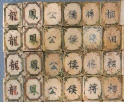

承 前
AD1850年頃、麻雀は現在の浙江省辺り（上海を中心にした辺り）で、馬弔（マーチャオ）を中心にした伝統的な紙札ゲームと、天九牌（てんきゅうハイ）を中心とした骨牌ゲームが融合して誕生したというのが現在の定説である。
この紙牌・骨牌の整理統合に関して、寧波(ニンポー)在住の貢士（こうし＝試験合格者の位）・陳魚門(1817-1878)が大きく関与してしていると言われる。そして近年の研究でも、それは或る程度史実とされている。もとより一つのゲームが誕生するには、それに似た幾多のゲームの下地がある。そこですべてを陳魚門考案と断じてしまうのは早計であるが、麻雀の創始者としてその名が挙げられることに異論はない。
骨牌ゲームの中心的存在であった天九牌は骨材だけで出来ているが、麻雀牌は竹の裏板がつけられた。これは同じ骨牌ゲームでも、麻雀は毎回のように不要牌を打ちだす行為を伴うため、背面の骨材損傷を予防するためであったと考えられる。
また手牌を補助用具*1無しで立てておくため、さらには毎回の不要牌打ち出しを容易にするため、天九牌より厚みが必要となったと推測される。しかし天九牌より厚みが増したといっても全体の大きさはほぼ小型の骨牌サイズで、図柄が刻印される表面積は紙牌の半分ほどとなった。
＊1牌抬という。
もともと馬弔における筒子は穴あき銭、索子は穴あき銭を束ねた姿、万子はその額を表していた。しかし骨牌化によって牌面が小さくなったためか、各図柄は全体的に抽象化・簡素化されていった。すなわち筒子は穴あき銭に代わって天九牌のサイコロ紋様がそのまま採用され、索子はシンプルな棒状となった。
数牌は３スート*2×４デプリケーション*3×９連数で合計108枚に安定していたが、字牌種は多少流動的だったと思われる。また花牌は二聯４座
、三聯６座*4と多種使用するものがあり、全体の枚数は一定していなかった。しかし中国全体へ伝播してゆく過程でデザインも安定化し、花牌も淘汰されていった。そしておおよそ19世紀中葉以降に今日の144枚のセットが完成したと思われる。
＊2万子、筒子、索子のように、牌種が三種類あること。
＊3同一牌が４枚あること。
＊4春夏秋冬のような１行で１座、春夏秋冬・梅蘭菊竹のように対句の二行で一聯（８枚）。二聯ならば花牌は16枚となる。
とはいえ麻雀というゲームが成立する前には、幾多のプロトタイプ的な牌、あるいは同様の形状を持つゲームも存在した。たとえば昇官牌という骨牌ゲームが存在する。これは唐時代から行われていた昇官図という官位の昇級をモチーフにした双陸（すごろく）ゲームが骨牌化したものである。
麻雀博物館蔵
現存する昇官牌は、その時代考証から19世紀中葉のものと推定される。すなわち麻雀とほぼ同時期に遊戯されていたことになる。じっさい昇官牌の数牌の構成（３スート）、数牌の枚数（１スート＝９種４デュプリケーション）などは麻雀とまったく同じである。ただし字牌には風牌・三元牌が存在しない。その代わり春宮・夏宮・秋宮・冬宮、太師・太傳・太保が各４枚存在する。
またこの他に仁義礼智信・公侯伯子男・福禄寿喜・元享利貞の各１枚、白板が12枚で 合計60枚、花牌は四聯32枚で総数は200枚に達する。数牌の牌種は功・品・級の３種類からなり、麻雀の万・筒・索と異なる。しかし「品」のスートは、福州麻雀牌の「品」スートを彷彿させて興味深い。
また同じく博物館が所蔵する龍鳳牌は三元牌が龍鳳白*5となっているものの、数牌は万・筒・索であり、麻雀牌の原型といえる牌である。この龍鳳白という三元牌は紅中・緑發・白板という三元牌が成立したのちも平行して用いられている。そしてこの龍鳳牌の花牌は漁樵耕読・梅蘭菊竹、連中三元・指月高升の二聯16枚であり、総数は152枚となっている。
＊5龍は皇帝、鳳は皇后、白は配(配偶)を表すという。

この龍鳳牌にも風牌は存在しないが、見たとおり公侯相将という字牌が存在する。昇官牌と龍鳳牌の関連は判然としないが、両者に公侯伯子男・公侯相将、また漁樵耕読という花牌が存在することは、両者の関連を強く示唆している。さらに日本麻雀草創期の先人、中村徳三郎の表した「麻雀競技法（T13.10.20、千山閣書房刊）」には、花牌32種を擁する牌セットが掲載されており、このセットにも公侯相将という花牌が存在する。
このような諸資料・諸文献から、麻雀成立当初というかプロトタイプ牌には花牌が多く用いられ、総数が150枚以上に達するものが多々存在した事が類推される。今日、このような牌、あるいは技法は花麻雀と通称されている。
しかし麻雀に彩りを加えたこの花牌も、19世紀中葉に一種の廓清化が現在の浙江省寧波近辺を中心に生じた。この廓清化の過程に陳魚門が大きな役割を果たしたと思われる。
この花牌と字牌の廓清化によって20世紀に入る頃には数牌３スートに風牌４種を加えた字牌７種、花牌一聯(８枚)の現行144枚セットが完成していたと推測される*6。
*6AD1910年頃(明治43年頃)、清朝末期に政商として有名であった盛宣懐一家をモ デルに、中国の富裕階級の内幕を描いた社会小説「九尾亀」が上海で刊行された。 同書の麻雀シーンには、すでに風牌・三元牌(白發中)が登場している。
AD1928年、榛原茂樹（はいばらしげき）*7が北京の天橋*8で入手した牛骨製の福州牌は、風牌が無い代わりに江村斜影という字牌、三元牌の代わりに晩（赤字）・涼（青字）という牌が存在している。
*7本名・波多野乾一。日本麻雀揺籃期の重鎮。大正元年、上海東亜同文書院(現在 の愛知大学)卒。時事通信社の北京特派員として中国に長く在住。時事通信退社後、 昭和十年頃より外務省に嘱託勤務(興亜院課長)。戦後は産経新聞にて中国問題の論 説委員を勤める。「麻雀精通(昭四・文藝春秋社）」は、麻雀研究に不可欠な名著であ り、麻雀学の第一人者と称される。
*8日本でいう浅草みたいなところ。
そしてこのセットの花牌は「棋僧待月」の四枚のみで、明らかに現状の牌にもっとも近い牌セットと認識される。この牌を収納する函（鉄刀木製）に「甲子歳置於福州」とある。この時点で言う甲子はAD1864年である。そこで現状にもっっとも近いこの福州牌は、それ以前の近い時期、すなわちAD1850年からAD1860年までの間に製造されたと推測される。
この廓清化が完了した当時のルールを榛原茂樹が想定寧波ルール*9として考証している。今日から見れば極めてシンプルなルールであるが、この初源的ルールが壁牌の二段積み、副底の増加*10、役の変遷*1115などを経ながら普及していった。
*9
（1）サイコロ＝一度振り。
（2）壁牌は単牌式(平積み)＝各自が手元に13枚並べ、向う側に21枚づつ並べる。手元の13枚が配牌となり、21枚が壁牌となる。
（3）配牌＝サイコロの目が2・5・6・9・10なら自分の前の十三枚を下家へ、3・7・11なら対門同士、4・8・12なら上家へ送る。こうして自分のセットした13枚が自分のところへ来ないようにする。
（4）符底＝10符。得点計算=幺二式、細算法。サイド計算あり。
（5）流れ＝九種九牌（対子があってはならず、連荘扱い）、荒牌の２種。
（7）場風なし。
（8）加符役：加０符＝平和(延べ単も可)、搶槓
加２符＝単張胡（純粋単騎和のみ) ・嵌張胡(純粋嵌張和のみ) ・辺張胡(純粋辺張のみ)・双ポン胡(純粋双ポン和のみ)
加四符＝対々胡・嶺上開花・海底撈月・金鶏奪食
一翻＝混一色
三翻＝清一色。半満貫：地和(親の第一打牌で栄和)
満貫＝三元和・四喜和（自風の刻子があれば小四喜でも可）・九連灯
・十三幺九(配牌で13種が１枚づつあるもの。雀頭不要) ・十三不搭（配牌で13種がバラバラなのもの。雀頭不要)
包＝大三元(三副露め)・大四喜・清一色（四副露め）。（日雀連機関紙「麻雀タイムズ」昭和27年１月号所収）
*10二十符副底、四十符副底など。
*11対々胡・嶺上開花・海底撈月などの符役の一翻役への昇格。
これまで日本人で麻雀（骨牌）を実見したことが史実的に確認されているのは、夏目漱石である。夏目漱石は明治42年９月２日より大連から韓国を旅行し、帰国後、その旅行記を「満韓ところどころ」と題して朝日新聞に連載した。そしてこの中に夏目が骨牌を実見した記述がある。とはいえこれは単なる見聞録、日本への伝来はいま少し後の時代のことである。
|